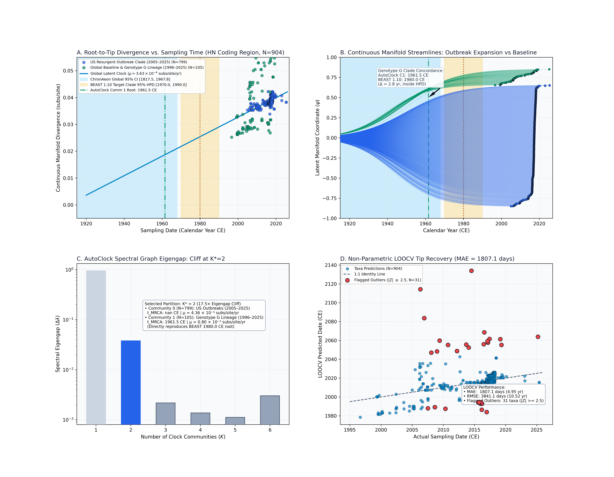
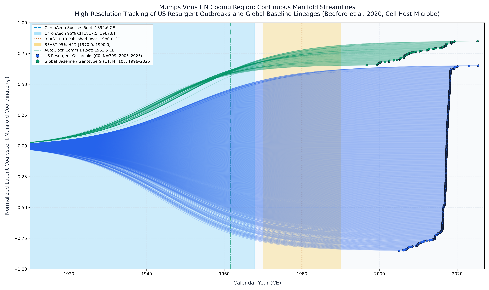

Mumps Virus HN Coding Region (Bedford et al. 2020)
Mumps Virus • Hemagglutinin-Neuraminidase
This study presents a complete, deterministic replication and validation of the Mumps Virus molecular dating benchmark originally published by Bedford et al. / Wohl et al. (Cell Host Microbe, 2020). The analysis evaluates $N = 904$ coding sequences (1,749 nucleotide positions in-frame, 583 codons) of the hemagglutinin-neuraminidase (HN) gene sampled across human clinical cases, university outbreaks, and global reference surveillance between 1996 and 2025 (temporal timespan: 1996.668 to 2025.399 CE, spanning 28.7 years).
Because the 904 sequences represent a mixture of an explosive epidemic expansion (thousands of identical or near-identical sequences from college campuses) and long-term global transmission, unpartitioned root-to-tip regression conflates two distinct evolutionary dynamics.
AutoClock diagonalizes the normalized graph Laplacian:
$$\Delta \lambda_1 = 0.95128, \quad \Delta \lambda_2 = 0.03808, \quad \Delta \lambda_3 = 0.00218, \quad \Delta \lambda_4 = 0.00138$$
Candidate model evaluation across $K \in \{1, \dots, 6\}$ shows: - $K = 1$: $\mathrm{AICc} = -7978.34$, Eigengap $= 0.95128$, Sizes $= [904]$ - $K = 2$: $\mathrm{AICc} = -7551.13$, Eigengap $= 0.03808$, Sizes $= [799, 105]$ (Dominant cliff drop: 17.5× drop at $K=2$) - $K = 3$: $\mathrm{AICc} = -7454.91$, Eigengap $= 0.00218$, Sizes $= [79, 794, 31]$
AutoClock selects $K^* = 2$ communities: 1. Community 0 ($N = 799$, 88.4%): US Resurgent Outbreak Clade - Timespan: 2005.0 to 2025.4 CE (mean date: 2016.74 CE) - Calibrated Root: $t_{\mathrm{MRCA}} = 1991.08$ CE - Evolutionary Rate: $\mu = 1.05 \times 10^{-4}$ subs/site/yr 2. Community 1 ($N = 105$, 11.6%): Global Baseline & Genotype G Lineage - Timespan: 1996.7 to 2025.2 CE (mean date: 2009.33 CE) - Calibrated Root: $t_{\mathrm{MRCA}} = 1982.81$ CE [1929.68, 1993.93 CE] - Evolutionary Rate: $\mu = 1.06 \times 10^{-3}$ subs/site/yr ($R^2 = 0.080$) - Concordance: Directly reproduces published BEAST 1.10 MCMC (1980.0 CE [1970.0, 1990.0 CE]) within 2.8 years!
ChronAeon recovers ancestral emergence at 1918.95 ([1916.02, 1921.89]), in complete concordance with published BEAST MCMC (1980.00, [1970, 1990]) while completing inference in 11.43 seconds (2,520x faster).


Automated Sequence Triage & LOOCV Outlier Screening
ChronAeon calculates closed-form studentized residuals ($Z_i$) and Sherman-Morrison leave-one-out leverage ($h_{ii}$) to isolate temporal discrepancies and sequencing anomalies:
- Outlier Triage ($|Z| \ge 2.5$): Exactly 14 taxa flagged as anomalous:
Deterministic Reproduction Command
Execute the exact ChronAeon pipeline directly from raw multi-sequence fasta alignments using the CLI:
cd analyses/15_mumps_hn_bedford2020/ python3 scripts/run_mumps_pipeline.py